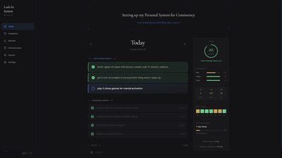
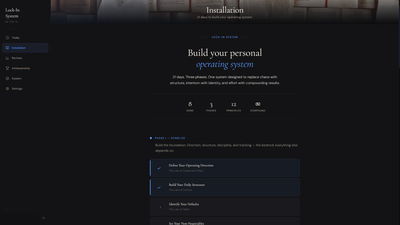
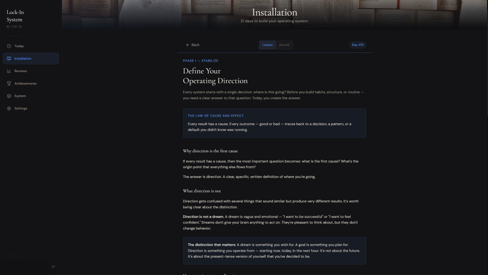
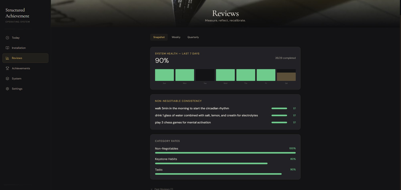
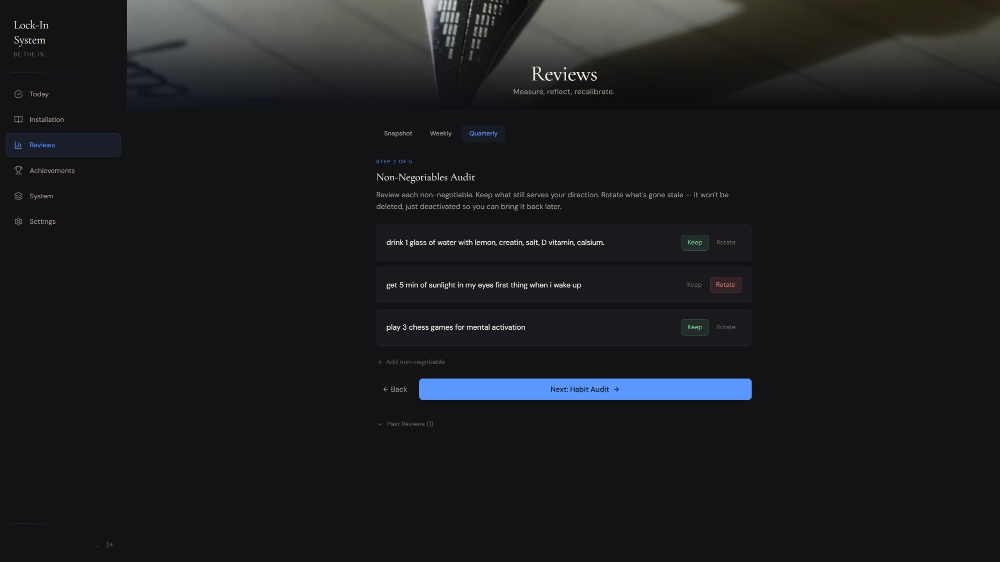
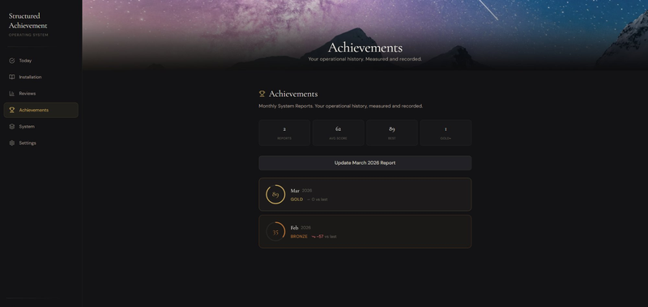
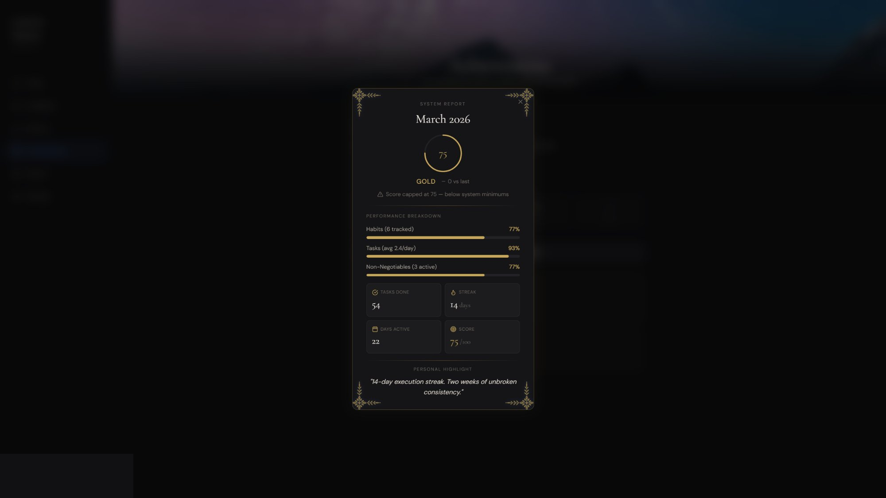
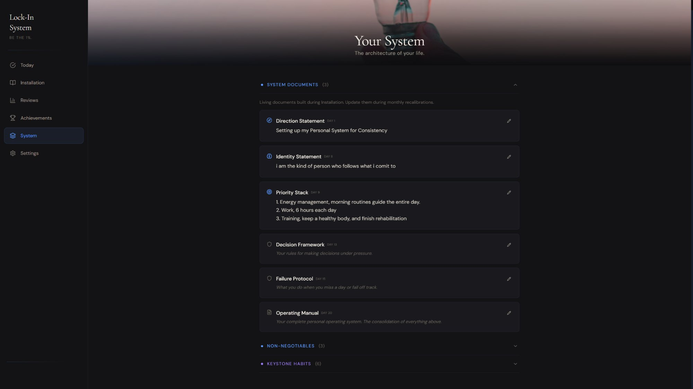

Reference Guide
Everything you need to know about the Structured Achievement app. How each section works, what to do daily, and how the system runs after installation.
Section 1
The Structured Achievement app is where you run your system. The 21-day program installs your operating system — direction, habits, non-negotiables, priorities, identity. The app is where you execute it, every day, after installation is complete.
The app has five tabs. Each one serves a specific function in your operating system. Nothing extra, nothing decorative. Every screen exists to keep you operational.
Section 2
This is the tab you open every morning and every evening. It shows today's date, your direction statement at the top, and three sections: non-negotiables, keystone habits, and daily tasks.

The Today tab — direction, non-negotiables, and habits.
How to use it
Morning: open the Today tab. See your non-negotiables, habits, and tasks. Execute them throughout the day, checking each off as you go. Evening: add tomorrow's tasks. Close the app. That's the entire daily interaction — under two minutes.
Section 3
The Installation tab contains all 21 days of the program. Each day appears as a numbered card in a grid, organized by phase: Stabilize (Days 1–7), Reconstruct (Days 8–14), and Install (Days 15–21). Days 7, 14, and 21 are review days marked with a dashed border.
Click any day to open it. Each day has two tabs:

The 21-day grid — three phases, progress tracking, and stats.

Day 1's lesson — principle, content, and configuration tasks.
Pacing
One day per day. Do not skip ahead. Each lesson builds on the previous one. Rushing through three days in one sitting installs nothing — it just creates the illusion of progress. The system needs time to integrate. Respect the sequence.
Section 4
The Reviews tab has three sub-tabs: Snapshot, Weekly, and Quarterly. This is where you assess how your system is running and make adjustments.

The Snapshot — 7-day system health and category rates.

Habit Audit — keep what works, rotate what's stale.
Section 5
At the end of each month, you generate a System Report — a scored summary of how your system performed. The report calculates a weighted score based on three categories: habit completion (40%), task completion (35%), and non-negotiable completion (25%).
Your score earns a tier:

Monthly report history — scores, tiers, and progress.

Expanded report — breakdown, stats, and personal highlight.
Minimums
To earn above Gold, your system must meet minimum thresholds: at least 3 active habits, an average of 3 tasks per day, and at least 2 non-negotiables. If you're below these minimums, your score caps at 75 regardless of completion rates. This prevents gaming the score with a single habit and one task.
If you forget to generate a report before the month ends, the app automatically creates it for you when you next open the Achievements tab. No data is lost.
Section 6
After you complete the 21-day installation, your system is operational — but it's not static. System Patches are weekly lessons that unlock one week after you finish Day 21. They address the challenges that only surface once the system is running: maintaining momentum, handling disruptions, recalibrating after setbacks, and deepening the infrastructure you built.
Section 7
The System tab is your operating system's configuration panel. It has three sections, all of which can be open simultaneously.

The System tab — your documents, non-negotiables, and habits in one configuration panel.
Section 8
This is the operational loop that makes the system work. Two touchpoints per day, under two minutes each. Everything else runs in the background.